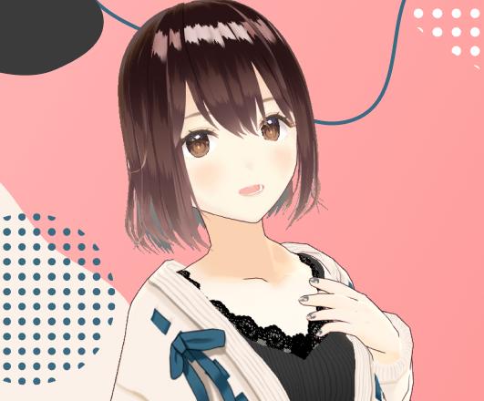
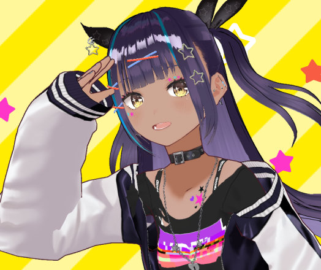

1. AIRA — Persona Utama (VRM Sample A)
AvatarSample_A.vrm (Humanoid 3D)Karakteristik: Ceria, energetik, suportif, gemar membantu belajar coding dan mendengarkan keluh kesah harian.
AI Virtual Companion • Interactive 3D VRM & Live2D Stage Platform

AIRA adalah pendamping digital interaktif berbasis kecerdasan buatan yang mengadopsi arsitektur Stage Web ala Project AIRI. Menghadirkan karakter 3D berbasis VRM dan Live2D di tengah layar, didukung percakapan multibahasa, suara alami (TTS), serta bank memori jangka panjang.
AIRA mendukung model avatar 3D standar terbuka (VRM) dan Live2D Cubism yang dapat ditukar kapan saja:
AvatarSample_A.vrm (Humanoid 3D)Karakteristik: Ceria, energetik, suportif, gemar membantu belajar coding dan mendengarkan keluh kesah harian.

AvatarSample_B.vrm (Humanoid 3D)Karakteristik: Santai, tenang, gaya bahasa lebih kasual, cocok untuk teman santai sambil memutar musik lofi.
Hiyori.model3.json (Live2D Cubism)Karakteristik: Klasik 2D anime girl, ekspresi wajah dinamis, dan gerakan nafas alami.
Merender model 3D VRM menggunakan Three.js dan @pixiv/three-vrm. Dilengkapi fisika rambut, kedipan mata otomatis (auto-blink), dan pelacakan kursor mouse (eye/head tracking).
Integrasi suara alami menggunakan Kokoro TTS dan Edge-TTS untuk berbicara secara realistis, serta Web Speech API / Whisper untuk mendengarkan suara pengguna melalui mikrofon.
Sistem mencatat fakta-fakta spesifik pengguna (seperti nama panggilan, hobi, dan jadwal kuliah) ke dalam database untuk diinjeksikan kembali saat merespon obrolan.
Dukungan pengiriman gambar tangkapan layar atau foto agar AIRA dapat menganalisis gambar dan memberikan respon visual secara kontekstual.
| Topik Sesi | Model Avatar | Pesan Terakhir | Memori Terkait | Aksi |
|---|---|---|---|---|
| Diskusi Proyek Web & HTML | AvatarSample_A.vrm | "Semangat ya! Struktur semantik HTML-nya sudah rapi banget ✨" | Tugas semester mata kuliah Web Pekan 2 | Lanjutkan di Stage → |
| Ngobrol Santai & Hobi | AvatarSample_A.vrm | "Nanti kita tonton anime favoritmu bareng ya!" | Pengguna suka Detective Conan | Lanjutkan di Stage → |
| Uji Coba Model 3D Kasual | AvatarSample_B.vrm | "Gimana tampilanku dengan jaket baru ini?" | Eksperimen model VRM alternatif | Lanjutkan di Stage → |